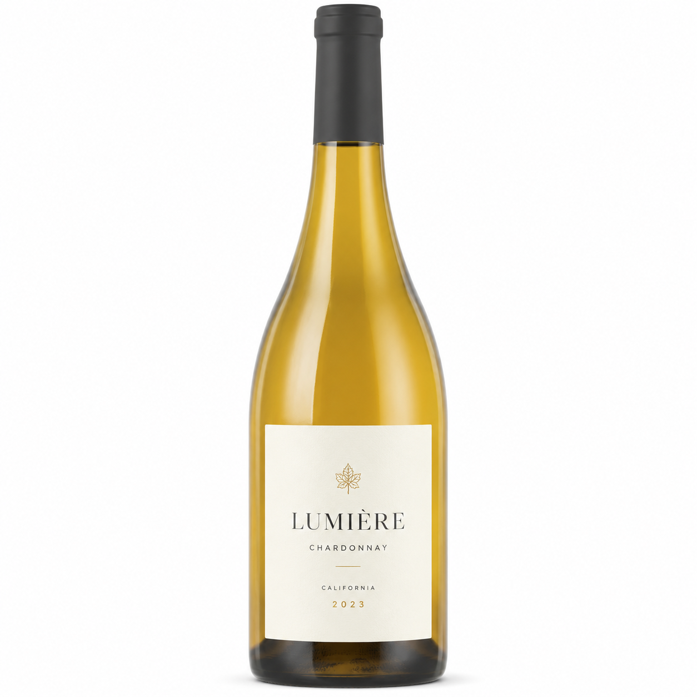
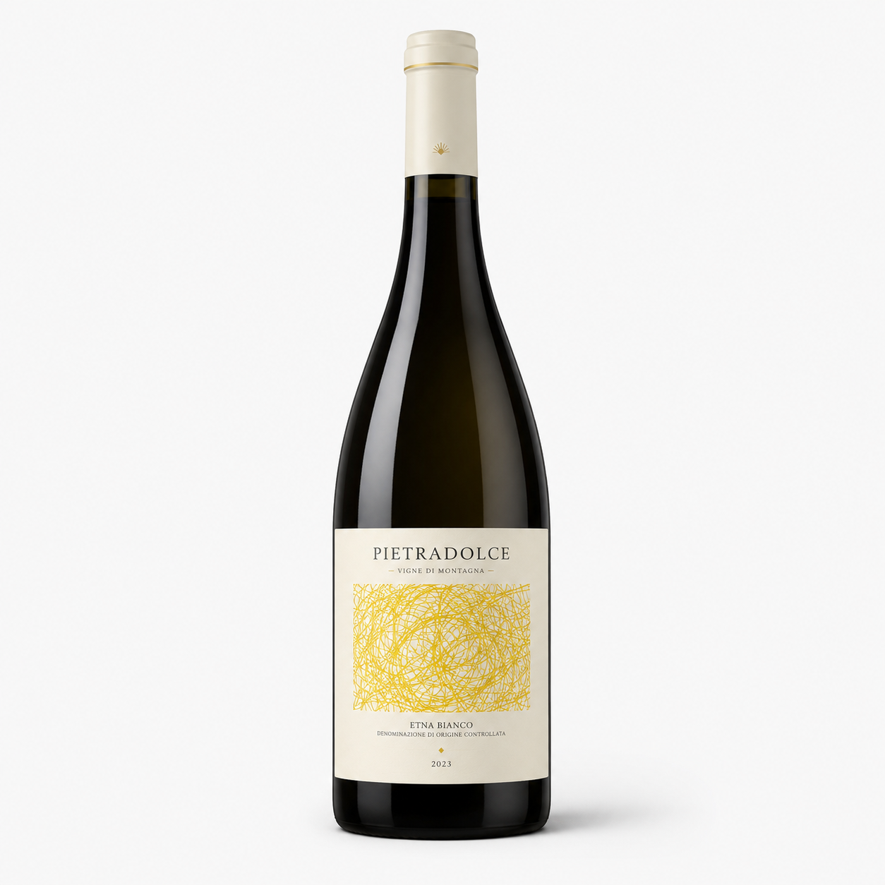
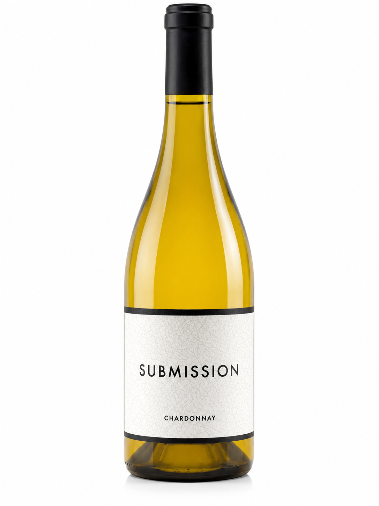

White wines
A small white wine selection chosen for freshness, elegance and mood. Not every bottle. Only the ones that feel right.

Rafael Palacios Sorte O Soro 2023
A special Spanish white wine from Valdeorras in north-western Spain. It is made from Godello grapes and feels elegant, fresh and very high-quality.
On the nose, it shows notes of peach, apricot, lychee, citrus fruit and subtle herbal hints. According to the seller, it can be enjoyed now or cellared for up to 14 years.
My opinion: I find this wine really interesting because it does not feel like a simple fruity white wine. It has more depth, freshness and a long finish. For me, this is a bottle for a quiet evening, a special dinner or as a gift.
Pairs well with: fish, seafood, white meat or creamy dishes.
View wine at 8wines
Bread & Butter Chardonnay 2024
A creamy California Chardonnay from Bread & Butter, made in a classic oaky style. The wine is known for its soft texture, ripe fruit and buttery character.
The grapes come from Monterey and Carneros, two important Californian wine regions. Monterey brings ripeness, freshness and aromatics, while the cooler Carneros region adds elegance and finesse to the blend.
On the nose, it shows ripe tropical fruit, toasted almonds and hints of sandalwood. On the palate, it feels full-bodied, soft and creamy, with notes of brioche, fresh pastries and rich vanilla spice.
My opinion: I like this wine because it brings a completely different white wine mood. It is not just fresh and light, but creamy, round and a little richer. For me, this is a good bottle for someone who likes smooth Chardonnay with a warm California feeling.
Pairs well with: hearty salads, pan-fried fish with buttery sauce, lasagna, aubergine parmigiana or creamy dishes.
View wine at 8wines
Pietradolce Etna Bianco 2024
An elegant Sicilian white wine from the north-eastern slopes of Mount Etna. It is made from 100% Carricante, a local grape variety known for freshness, lightness and volcanic character.
Pietradolce was founded in 2005 in Solicchiata and focuses on wines that express Etna’s unique volcanic terroir. The vineyards benefit from hot dry days and much cooler nights, which helps the grapes keep freshness and balance.
On the nose, it shows lemon zest, lime, honeysuckle and almond blossom. On the palate, it feels fresh, clean and elegant, with white peach, citrus notes and a pure finish.
My opinion: I like this wine because it feels very clean and bright. It sounds less creamy than the Chardonnay and more mineral, fresh and precise. For me, this is a bottle for hot days, aperitif moments, seafood or a calm garden evening.
Pairs well with: aperitif, seafood, grilled fish, light pasta, fresh salads or warm summer evenings.
View wine at 8wines
689 Cellars Submission Chardonnay 2023
A California Chardonnay from 689 Cellars, made from fruit sourced from Sonoma’s Russian River Valley, Napa’s Carneros region and Monterey County. These regions help create a Chardonnay with ripe fruit, freshness and a refined structure.
The wine is aged for 8 months in French oak barrels, which gives it a rich and creamy texture. It shows tropical and stone fruit notes, together with caramel, vanilla and toasted oak.
On the palate, it feels smooth, full and rounded, but still elegant enough to enjoy chilled. It can be cellared for up to 7 years and should be served chilled.
My opinion: I like this wine because it sounds rich, smooth and easy to enjoy. It has that creamy Chardonnay feeling, but still feels more refined than a simple everyday white wine. For me, this is a bottle for food, friends and relaxed evenings.
Pairs well with: cheese platters, leafy summer salads, roast chicken, creamy pasta or soft dinner dishes.
View wine at 8winesSome links on this page are affiliate links. If you buy through them, I may earn a small commission at no extra cost to you.